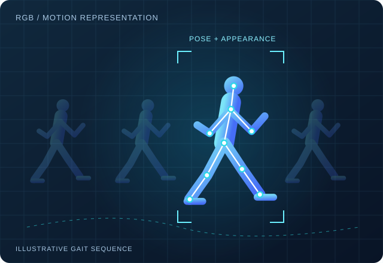

Programming Languages
Languages for research, software development, and automation.
- Python
- MATLAB
- C
- C++
- Java
- JavaScript
- SQL
- Bash
I’m Md. Mashiur Rahaman.
I study how AI sees and understands people—through RGB imagery, 3D LiDAR signals, and the way we move.
Try the interactive gait explorer ↓School of Automation, Central South UniversityChangsha, China

Exploring gait through RGB images, silhouettes, and human movement.

I’m a PhD candidate in Control Science and Engineering at Central South University, working under the supervision of Prof. Tang Jin.
My research brings together RGB and LiDAR gait recognition, biometric identification, 3D point-cloud analysis, and explainable AI. I’m interested in what vision models learn, why they fail, and how we can make them more reliable in real-world conditions.
Alongside biometrics, I explore biomedical AI, medical image analysis, and multimodal learning—connecting computational research with human-centered applications.
View my ORCID profileFrom programming and deep learning to biometrics, medical imaging, and multimodal intelligence.
Languages for research, software development, and automation.
Research topics and methods spanning recognition, perception, and intelligent systems.
Libraries for deep learning, image analysis, and 3D data processing.
RGB & LiDAR gait recognition · Biometric identification · Explainable AI · Biomedical applications
Explore research directionsFrom motion to meaning, my work explores robust recognition and interpretable intelligence.
Investigating RGB imagery, silhouettes, and motion representations for gait-based human identification under challenging real-world conditions.
Exploring 3D point-cloud representations, gait features, and explainable recognition systems.
What happens when part of a person is hidden, or fewer 3D points are available? Move the sliders and explore.
Appearance & movement
Depth & 3D structure
RGB images capture visual appearance. LiDAR captures depth and spatial structure.
Study body shape, movement, and 3D features across a walking sequence.
Explore identity cues and understand how a recognition model reaches its decisions.
Gait recognition — studying the way a person walks as a cue for identity.
RGB — ordinary color images, like those from a camera.
LiDAR — a sensor that measures distance to describe the world in 3D.
Point cloud — a set of points representing the shape of a person or object.
Multimodal learning — combining information from different types of signals.
Explainable AI — examining which information influences a model’s decision.
Published research, accepted conference contributions, and manuscripts under review.
Mozumder Mohibullah, Longjun Dong, Afsana Rabeya Rukaia, Mashiur Rahaman, Labanyo Bacher
In plain language: Combining deep learning with physical constraints to assess rockburst hazards using microseismic signals.
Journal of Applied Geophysics · Volume 255 · Article 106473 · 2026
DOI: 10.1016/j.jappgeo.2026.106473COMPAS 2026 · University of Dhaka, Bangladesh · October 9–10, 2026
IEEE T-BIOM
Pattern recognition & intelligent systems
Explore additional research updates through my academic profiles. View source
Research across China and Bangladesh, grounded in software engineering and computer science.
View the full research & technical toolkit →Central South University, China
School of Automation · Advisor: Prof. Tang JinNortheastern University, China
Supervisor: Dr. Keming MaoDaffodil International University, Bangladesh
Supervisor: Dr. Fernaz Narin NurChinese Government ScholarshipPhD study, 2023 · Master’s study, 2019
Hands-on training in software development and medical AI.
Completed practical training as a mandatory component of my academic coursework, covering software development with Spring Boot, MyBatis, and Vue.js.
The training also explored deep learning for organ segmentation, connecting medical image analysis with practical applications.
Completed courses in programming and artificial intelligence.
Simplilearn SkillUp
Completed 24 August 2026
Certificate code: 10643661View certificate (PDF)Simplilearn SkillUp
Completed 24 August 2026
Certificate code: 10642806View certificate (PDF)Simplilearn SkillUp
Completed 24 August 2026
Certificate code: 10643786View certificate (PDF)A few moments away from the screen: shared experiences, team activities, and trying something different.
Making memories beyond the everyday routine.
Taking a break and trying something hands-on.
New experiences, fresh energy.
Selected personal moments · Select a photo for a closer look.
Have a research idea or a question? Let’s connect around computer vision, biometrics, and AI that helps us understand people.
Choose a topic to add it to your email subject.
Opens your email app. You can review your message before sending.